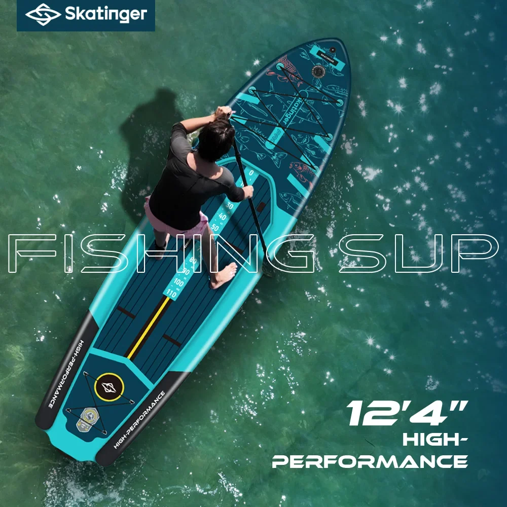
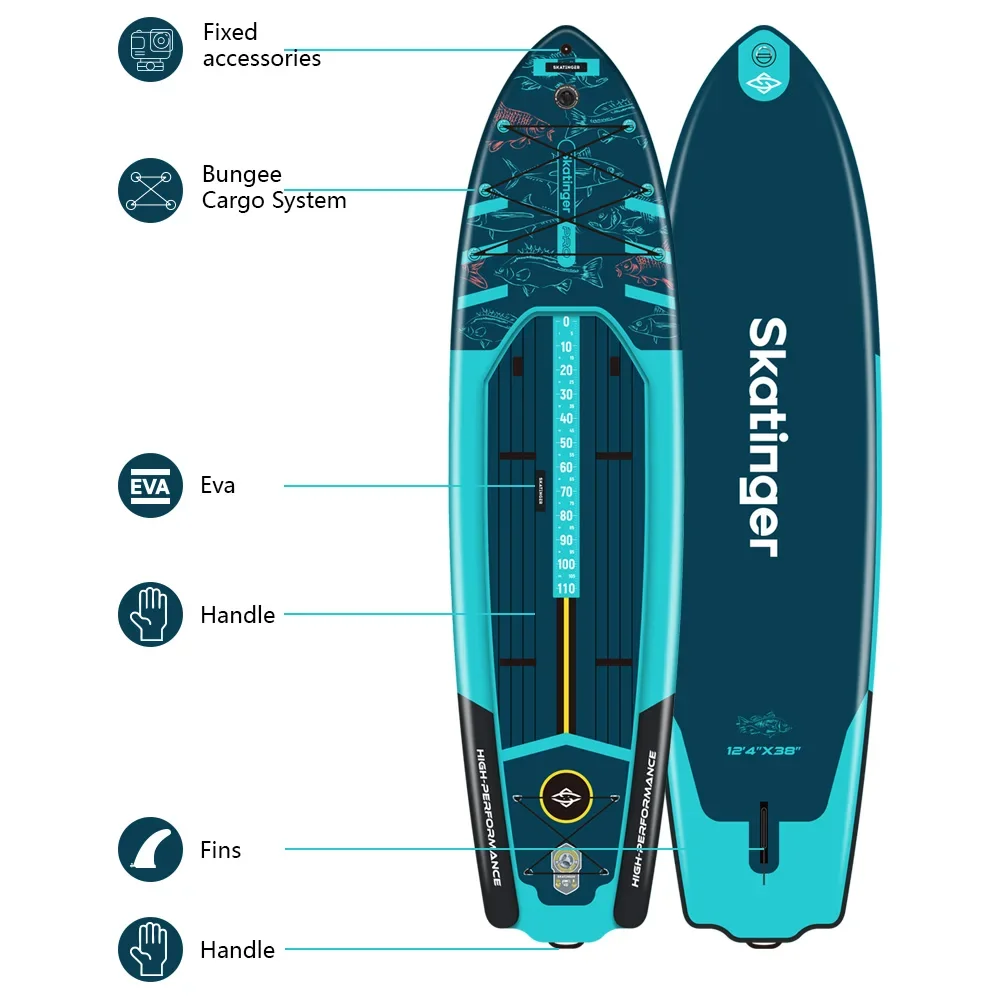
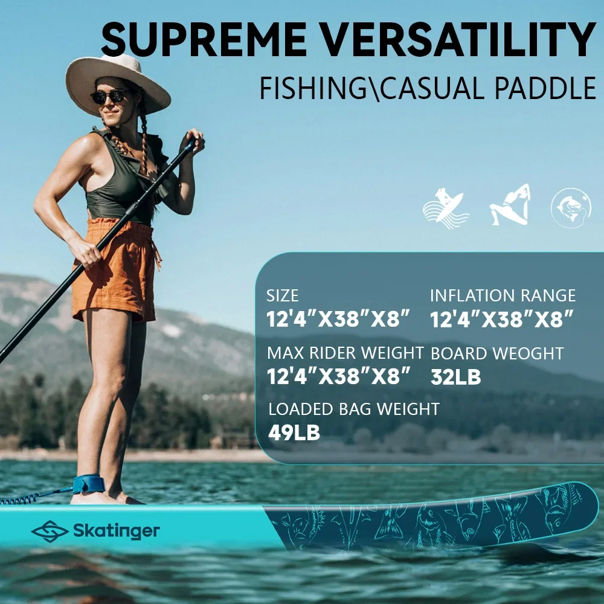
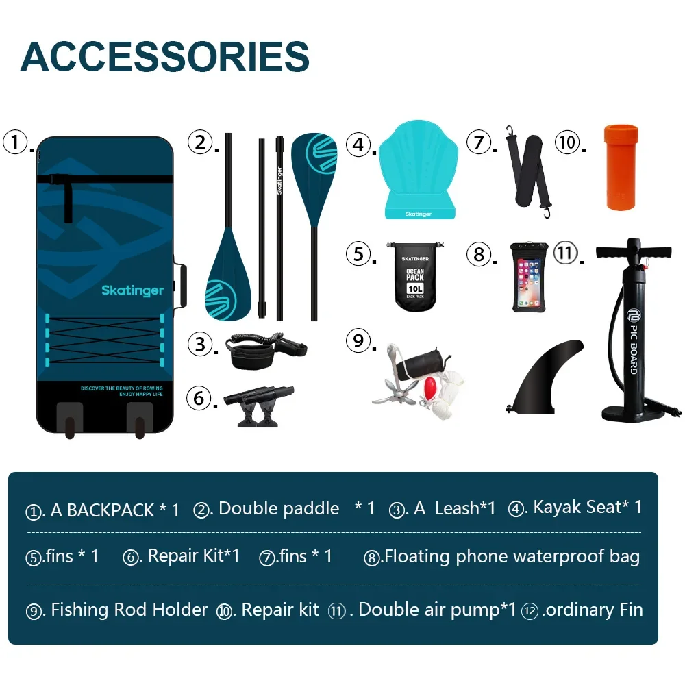
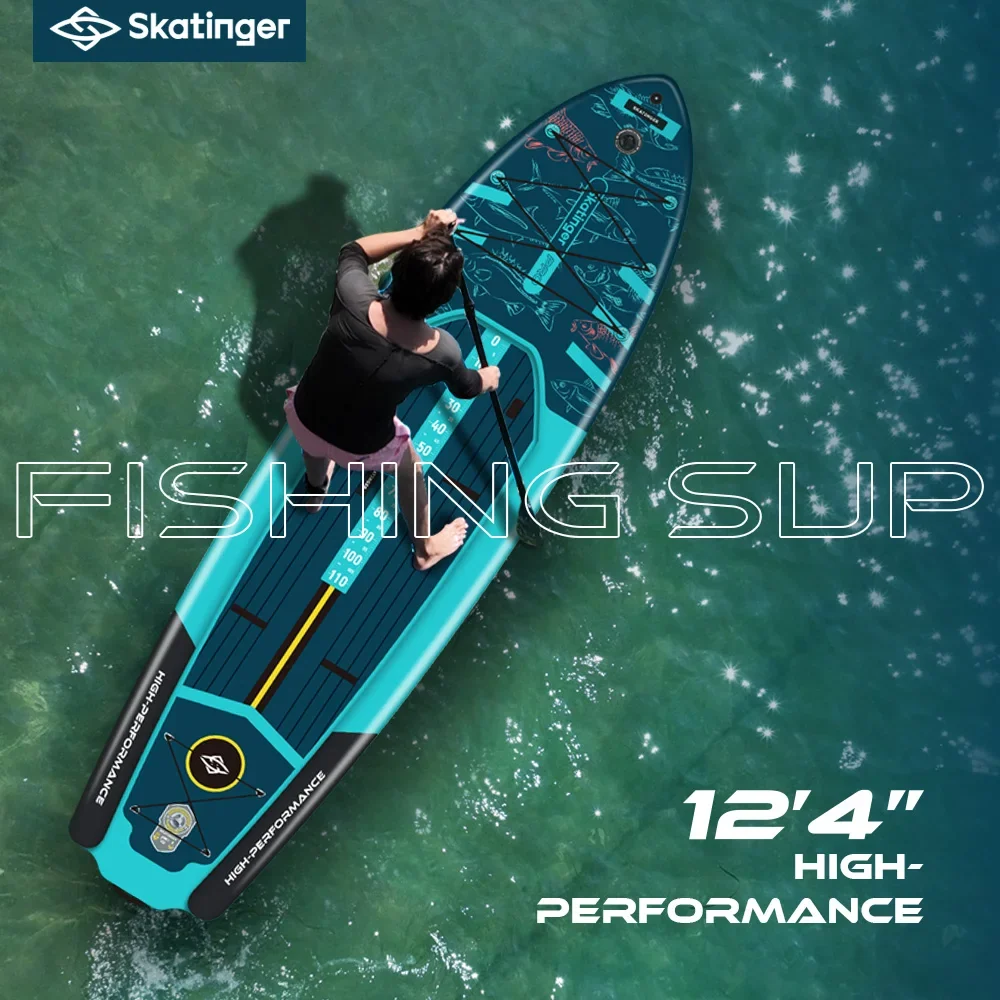
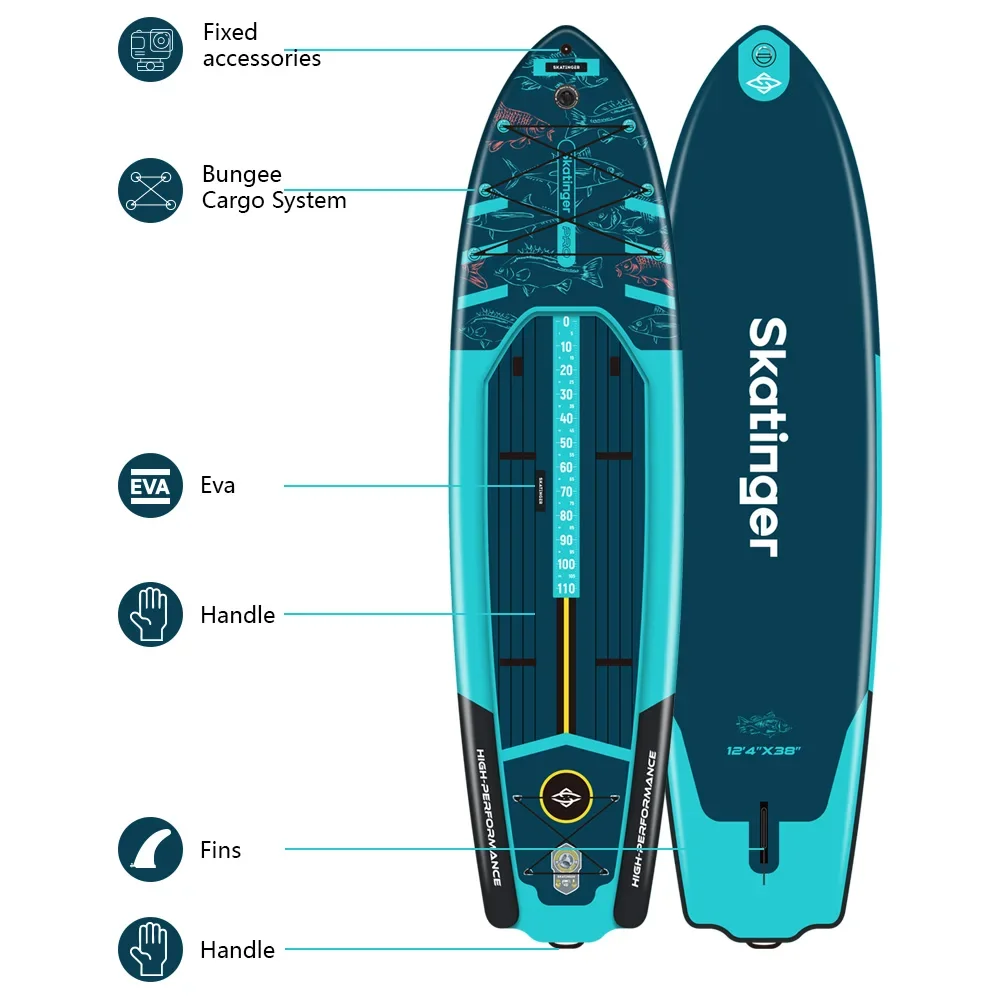
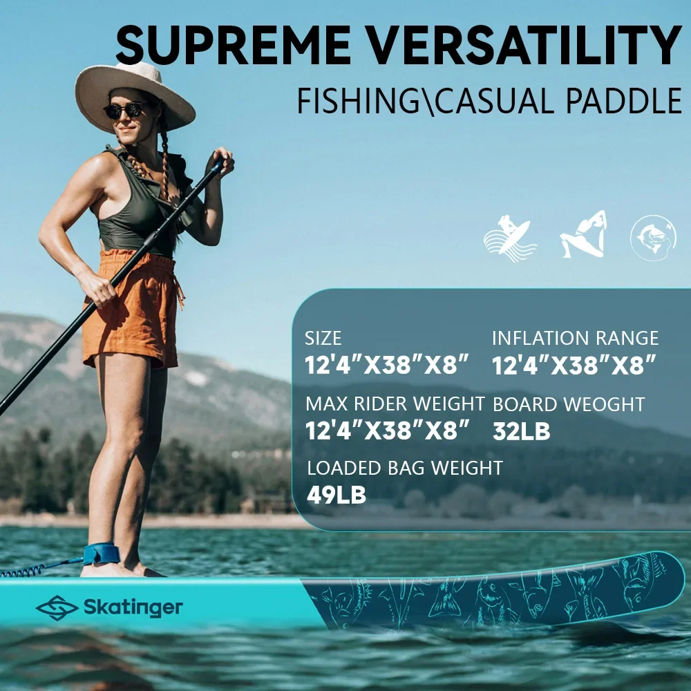
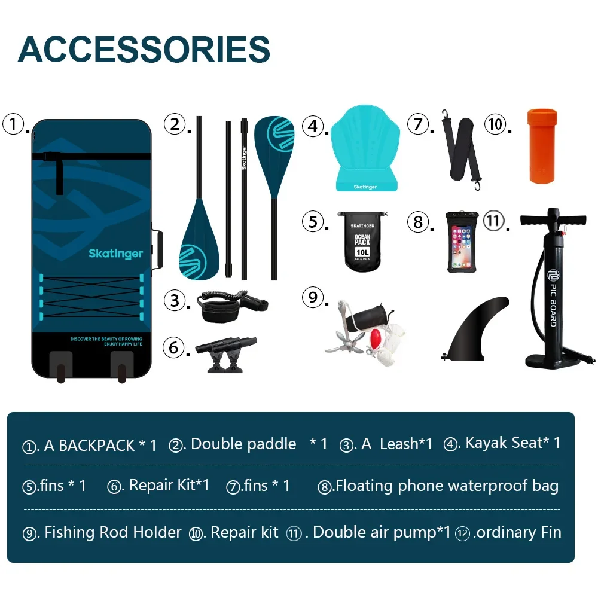

Nadmuchiwana deska SUP do łowienia ryb Skater OEM Drop Stitch do pływania na stojąco
Poczuj dreszczyk emocji zarzucania wędki z brzegu wody dzięki Skatinger OEM Fishing SUP. Ta nadmuchiwana deska do pływania na stojąco została zaprojektowana specjalnie dla wędkarzy, łącząc stabilność, zwrotność i funkcje niezbędne wędkarzom, aby uatrakcyjnić Twoje wędkarskie przygody.
Wykonana w technologii Drop Stitch, deska Skatinger OEM SUP zapewnia sztywną platformę, która wytrzyma trudy wędkarskich wypraw.
Szeroki pokład zapewnia dużo miejsca na wygodne stanie i poruszanie się podczas zarzucania, a zintegrowane mocowania D-ring pewnie trzymają sprzęt na miejscu.
- Trwała konstrukcja Drop Stitch zapewnia sztywność i stabilność
- Szeroki pokład oferuje przestronną i wygodną platformę
- Zintegrowane mocowania D-ring zabezpieczają sprzęt wędkarski
- Nadmuchiwana konstrukcja ułatwia transport i przechowywanie
Chcesz odkryć nowe łowiska i złowić kolejną dużą rybę? Deska SUP Skatinger OEM Fishing to idealne narzędzie, które Ci w tym pomoże.
Deska SUP Skatinger OEM Fishing została zaprojektowana z myślą zarówno o miłośnikach rekreacji, jak i wędkarstwa. Ta nadmuchiwana deska SUP z systemem drop-stitch zapewnia stabilność, trwałość i wszystkie funkcje potrzebne do udanego dnia na wodzie.
- Konstrukcja Drop Stitch: Wykonana w oparciu o mocną i trwałą technologię drop stitch, która zapewnia doskonałą sztywność i wytrzymałość, zapewniając stabilną platformę do wiosłowania i wędkowania.
- Wyjmowany system płetw: Zawiera wyjmowany system płetw, który poprawia śledzenie i manewrowanie w różnych warunkach wodnych.
- Uchwyt do przenoszenia: Wygodny uchwyt do przenoszenia ułatwiający transport na miejsce połowu i z powrotem.
- Liny bungee: Bezpiecznie mocuj sprzęt, przynęty i akcesoria za pomocą zintegrowanych lin bungee.
Deska SUP do wędkowania Skatinger OEM została wykonana z wysokiej jakości materiałów i charakteryzuje się precyzyjną konstrukcją, zapewniającą niezawodną wydajność na wodzie. Chociaż konkretne wymiary mogą się różnić, spodziewaj się długości deski odpowiedniej do wędkowania, szerokości zapewniającej wystarczającą stabilność i grubości zapewniającej optymalną wyporność.
Ta nadmuchiwana deska SUP oferuje liczne korzyści zarówno dla okazjonalnych wiosłowiczów, jak i zapalonych wędkarzy:
- Stabilność: Szeroka platforma i konstrukcja typu drop stitch zapewniają stabilną podstawę do rzucania, zwijania i wygodnego stania podczas wędkowania.
- Wszechstronność: Ciesz się elastycznością korzystania z tej deski do rekreacyjnego wiosłowania, eksplorowania spokojnych wód i łowienia ulubionych gatunków ryb.
- Przenośność: Nadmuchiwana konstrukcja pozwala na łatwe przechowywanie i transport, dzięki czemu wygodnie zabierzesz ją ze sobą na każdą przygodę.
Napompuj deskę zgodnie z instrukcją producenta. Zamontuj system stateczników dla lepszego śledzenia. Zabezpiecz swój sprzęt za pomocą linek bungee. Wiosłuj za pomocą standardowego wiosła (sprzedawanego oddzielnie), dostosowując długość i rytm ruchów, aby zapewnić sobie efektywne poruszanie się po wodzie.
Zawsze dbaj o swoje bezpieczeństwo, zakładając kamizelkę ratunkową, sprawdzając warunki pogodowe przed wyruszeniem w morze i pozostając w wyznaczonych strefach.